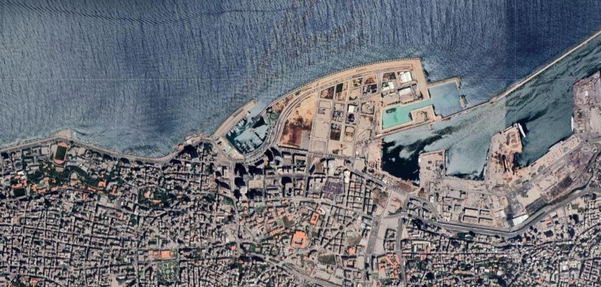

Perceived blast intensity in Beirut

Overview
For this project I was a volunteer for Open Map Lebanon Project. Based on data from a survey measuring perceived blast intensity (from 1 to 10)
I prepared a visualisation depicting how the blast might have been felt across the city of Beirut.
Picture credit: Google Sattelite Image 2021